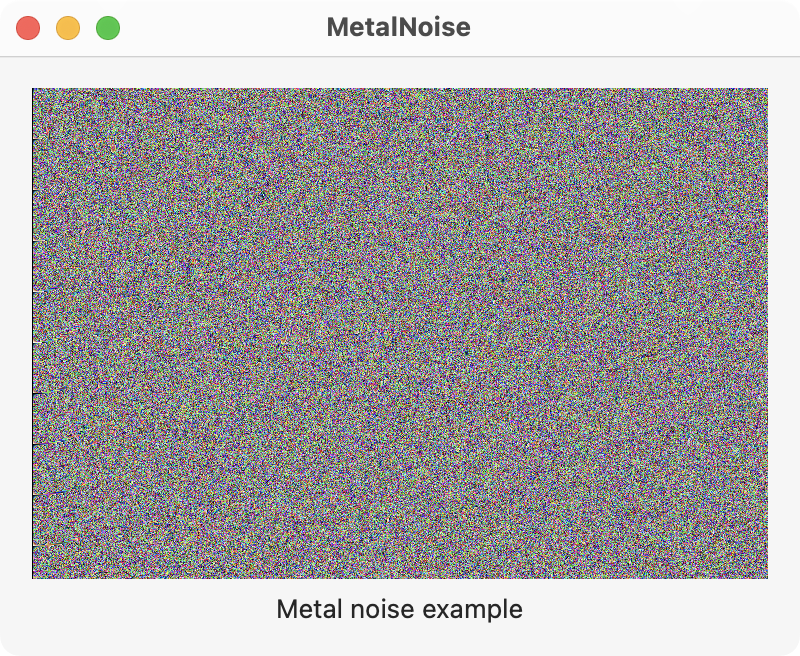

This example creates noise using a shader function that is based on the Golden Ratio. It is adapted from a function on the Shadertoy website.

The main view is shown below and contains the MetalView where the noise is drawn.
// ContentView.swift
import SwiftUI
import MetalKit
struct ContentView: View {
@State private var mtkView = MTKView()
@State private var renderer: Renderer?
var body: some View {
VStack {
MetalView(mtkView: mtkView).onAppear {
renderer = Renderer(metalView: mtkView)
}
Text("Metal noise example")
}
.padding()
.frame(minWidth: 400, minHeight: 300)
}
}
The MetalView represents a MTKView as shown below. Notice the MTKView must be wrapped with a NSViewRepresentable for SwiftUI.
// MetalView.swift
import SwiftUI
import MetalKit
struct MetalView: NSViewRepresentable {
let mtkView: MTKView
func makeNSView(context: Context) -> some NSView {
return mtkView
}
func updateNSView(_ nsView: NSViewType, context: Context) { }
}
The Renderer object sets up the Metal device, compute pipeline, Metal view, shader function, and command queue.
// Renderer.swift
import MetalKit
class Renderer: NSObject, MTKViewDelegate {
static var device: MTLDevice!
static var commandQueue: MTLCommandQueue!
var computePipeline: MTLComputePipelineState!
init(metalView: MTKView) {
super.init()
// Setup the GPU device and command queue
guard let device = MTLCreateSystemDefaultDevice(),
let commandQueue = device.makeCommandQueue()
else {
fatalError("GPU not available")
}
Renderer.device = device
Renderer.commandQueue = commandQueue
// Setup shader function and compute pipeline
let library = device.makeDefaultLibrary()
let drawNoise = library?.makeFunction(name: "draw_noise")
do {
computePipeline = try device.makeComputePipelineState(function: drawNoise!)
} catch let error as NSError {
print(error)
}
// Setup the Metal view
metalView.device = device
metalView.clearColor = MTLClearColor(red: 1.0, green: 0.0, blue: 0.0, alpha: 1.0)
metalView.framebufferOnly = false
metalView.delegate = self
}
func mtkView(_ view: MTKView, drawableSizeWillChange size: CGSize) { }
func draw(in view: MTKView) {
guard let drawable = view.currentDrawable else { return }
// Command buffer
let commandBuffer = Renderer.commandQueue.makeCommandBuffer()
// Command encoder
let commandEncoder = commandBuffer?.makeComputeCommandEncoder()
commandEncoder?.setComputePipelineState(computePipeline)
commandEncoder?.setTexture(drawable.texture, index: 0)
// Threads
let w = computePipeline.threadExecutionWidth
let h = computePipeline.maxTotalThreadsPerThreadgroup / w
let threadsPerThreadGroup = MTLSize(width: w, height: h, depth: 1)
let threadsPerGrid = MTLSize(width: drawable.texture.width, height: drawable.texture.height, depth: 1)
commandEncoder?.dispatchThreads(threadsPerGrid, threadsPerThreadgroup: threadsPerThreadGroup)
commandEncoder?.endEncoding()
// Commit the buffer
commandBuffer?.present(drawable)
commandBuffer?.commit()
}
}
The gold_noise shader function calculates the noise value. That value is used by the draw_noise kernel function to draw the RGB values to the output texture.
#include <metal_stdlib>
using namespace metal;
float gold_noise(float2 xy, float seed) {
float phi = 1.61803398874989484820459;
float z = fract(tan(distance(xy * phi, xy) * seed) * xy.x);
return z;
}
kernel void draw_noise(
uint2 id [[thread_position_in_grid]],
texture2d<half, access::write> output [[texture(0)]]
){
float r = gold_noise(float2(id.x, id.y), 0.1);
float g = gold_noise(float2(id.x, id.y), 0.2);
float b = gold_noise(float2(id.x, id.y), 0.3);
half3 c = half3(r, g, b);
half4 color = half4(c, 1.0);
output.write(color, id);
}
Swift Programming for macOS © 2023
Built by Gavin Wiggins